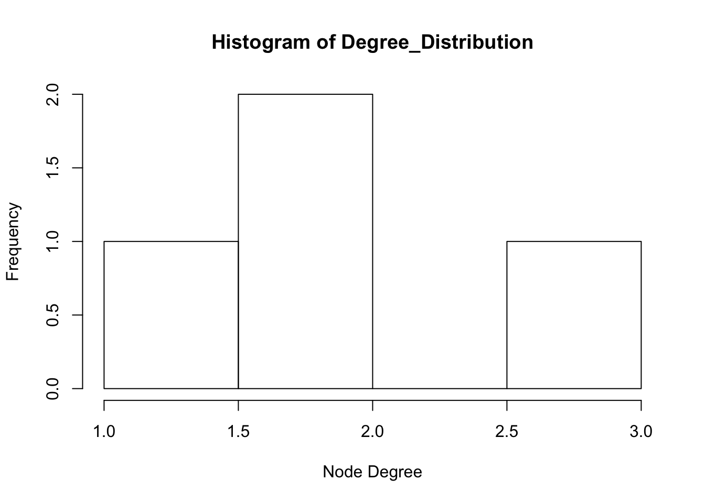
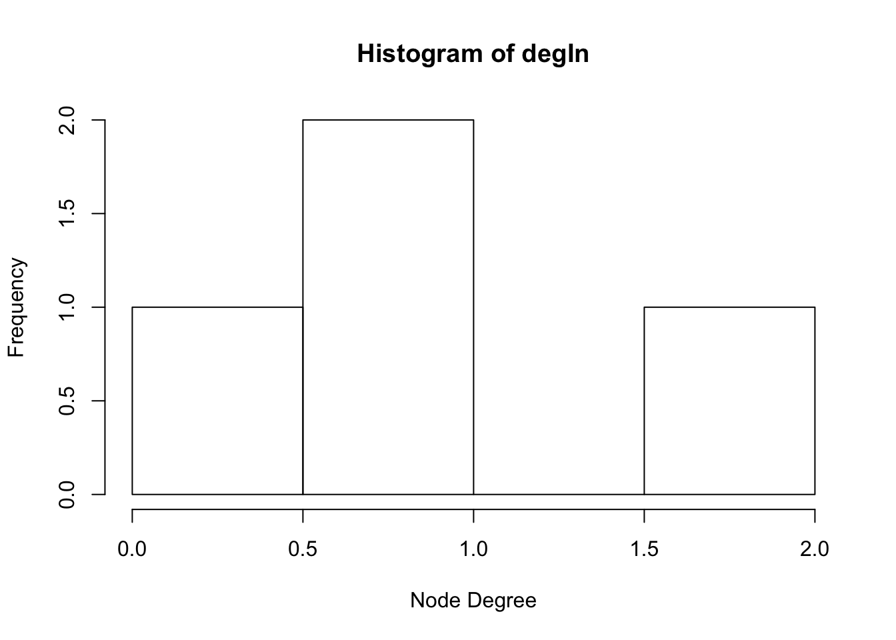
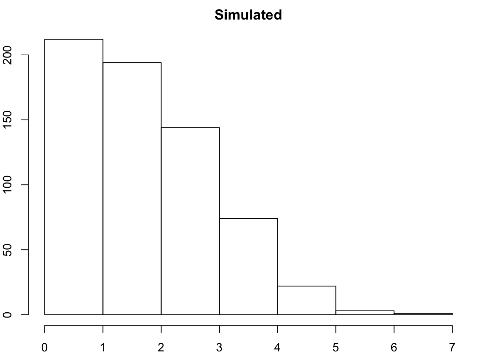

Visualizing and Describing Networks
Networks with igraph
First, make sure you have loaded package igraph.
library(igraph)##
## Attaching package: 'igraph'## The following objects are masked from 'package:stats':
##
## decompose, spectrum## The following object is masked from 'package:base':
##
## unionFirst, create a simple adjacency matrix with three rows and three columns
mat1 <- matrix(c(0, 1, 0, 0, 0, 1, 1,0, 0), nrow=3, ncol=3) ### matrix function
mat1## [,1] [,2] [,3]
## [1,] 0 0 1
## [2,] 1 0 0
## [3,] 0 1 0Use igraph function graph_from_adjacency_matrix() to create a network object from your graph. Use plot function to plot.
mat2 <- graph_from_adjacency_matrix(mat1)
plot(mat2, edge.arrow.size = 1) ## set the size of the arrows 
Alternatively, create the network by telling igraph what links you have
mat3 <- graph( edges=c(1,3, 3,2, 2,1), n=3, directed=T ) # use graph function and list edges
plot(mat3, edge.arrow.size = 1)
Network Aestetics
Many parts of a network can be sized and colored to help communicate results more clearly.
plot(mat3, edge.arrow.size = 1, vertex.color = "purple", vertex.size = 20, vertex.label.cex = 2, vertex.label.dist = 3.5)
Describing networks
Use igraph “graph” function to plot directly as igraph object.
g1 <- graph( edges=c(1,3, 3,2, 2,1), n=3, directed=T )
g1## IGRAPH 85d1a0a D--- 3 3 --
## + edges from 85d1a0a:
## [1] 1->3 3->2 2->1plot(g1, edge.arrow.size = .5)
Undirected
g2 <- graph(edges = c(1,3, 1,2, 1,4, 2,4), n = 4, directed = F)
g2## IGRAPH d4bb5e8 U--- 4 4 --
## + edges from d4bb5e8:
## [1] 1--3 1--2 1--4 2--4plot(g2, edge.arrow.size = .5)
Graph Density, diameter, mean path length
igraph::graph.density(g2) #graph density ## [1] 0.6666667diameter(g2) # diameter## [1] 2mean_distance(g2) ##mean path length## [1] 1.333333directed graph
g3 <- graph(edges = c(1,3, 1,2, 1,4, 2,4), n = 4, directed = T)
g3## IGRAPH f529f97 D--- 4 4 --
## + edges from f529f97:
## [1] 1->3 1->2 1->4 2->4plot(g3, edge.arrow.size = .7)
Toy example for betweenness centrality
g5 <- graph(edges = c(1,2, 2,3, 3,4, 4,5), n = 5, directed = F)
plot(g5, vertex.label.cex = .0001)
igraph::closeness(g2, vids = V(g2), normalized = TRUE)## [1] 1.00 0.75 0.60 0.75igraph::closeness(g2, vids = V(g2), normalized = FALSE)## [1] 0.3333333 0.2500000 0.2000000 0.2500000igraph::betweenness(g2)## [1] 2 0 0 0Geodesic
Geodesic <- igraph::distances(g2)
Geodesic ## geodesic matrix## [,1] [,2] [,3] [,4]
## [1,] 0 1 1 1
## [2,] 1 0 2 1
## [3,] 1 2 0 2
## [4,] 1 1 2 0hist(Geodesic)
degree distribution
Degree_Distribution <- igraph::degree(g3, mode = "total")
hist(Degree_Distribution, xlab = "Node Degree") #all
degIn <- igraph::degree(g3, mode = "in") #in
degOut <- igraph::degree(g3, mode = "out") #out
hist(Degree_Distribution, xlab = "Node Degree") 
hist(degIn, xlab = "Node Degree")
hist(degOut, xlab = "Node Degree")
igraph::vertex_connectivity(g2)## [1] 1igraph::transitivity(g2)## [1] 0.6back to our class example
Edges <- data.frame(
From =c("Jim", "Jim", "Jim", "Jim", "Carole", "Carole", "Carole", "Joe", "Joe", "Joe", "Michelle", "Michelle", "Jen", "Jim"),
To = c("Carole", "Joe", "Mark", "Jill", "Jen", "Pete", "Paul", "Jill", "Cam", "Kate", "Jill", "Tim" , "Cam", "Jess"))
Nodes <- data.frame(
Name = c("Jim", "Carole", "Joe", "Michelle", "Jen", "Pete", "Paul", "Tim", "Jess", "Mark", "Jill", "Cam", "Kate"),
Experience = c(8.5, 6.5, 4.0, 1.0, 3.0, 10.0, 5.0, 5.0, 5.0, 1.0, 1.0, 6.0, 6.0))
AsMatrix <- graph_from_data_frame(d = Edges, vertices = Nodes, directed = FALSE)
AsMatrix## IGRAPH 525df1a UN-- 13 14 --
## + attr: name (v/c), Experience (v/n)
## + edges from 525df1a (vertex names):
## [1] Jim --Carole Jim --Joe Jim --Mark Jim --Jill
## [5] Carole --Jen Carole --Pete Carole --Paul Joe --Jill
## [9] Joe --Cam Joe --Kate Michelle--Jill Michelle--Tim
## [13] Jen --Cam Jim --Jessplot(AsMatrix)
Degree_Distribution <- igraph::degree(AsMatrix, mode = "total")same number of nodes and links
new1 <- sample_gnm(13, 14, directed = FALSE, loops = FALSE)
h1<- igraph::degree(new1)
hist(h1)
run that n number of times
degamat <- NULL
n <- 50
for(i in 1:n){
newmatrix <- sample_gnm(13,14, directed = FALSE, loops = FALSE)
degmat <- igraph::degree(newmatrix)
degamat<-rbind(degamat,degmat)
}
degamat## [,1] [,2] [,3] [,4] [,5] [,6] [,7] [,8] [,9] [,10] [,11] [,12]
## degmat 2 1 2 4 1 1 1 3 1 4 3 2
## degmat 1 2 1 4 3 1 1 2 4 3 1 1
## degmat 3 2 2 2 2 3 1 2 4 2 2 2
## degmat 2 4 2 2 2 1 1 4 1 2 5 1
## degmat 4 2 0 1 4 5 1 1 1 3 4 1
## degmat 1 1 2 5 1 2 1 1 3 3 1 3
## degmat 4 3 3 3 2 0 2 2 1 3 1 2
## degmat 2 1 3 3 3 1 3 0 3 3 1 3
## degmat 1 1 2 4 2 3 3 3 2 2 4 1
## degmat 1 2 2 3 2 3 1 2 2 3 2 2
## degmat 0 2 4 1 3 1 0 3 3 4 2 1
## degmat 1 2 2 2 2 5 2 1 5 1 3 2
## degmat 3 2 3 0 4 3 2 2 3 0 2 2
## degmat 1 2 2 2 2 4 4 1 2 2 1 1
## degmat 3 0 4 1 2 4 2 4 2 2 1 1
## degmat 1 1 0 4 1 4 4 2 1 2 2 4
## degmat 3 1 3 3 5 0 2 1 2 3 1 2
## degmat 0 4 2 3 1 2 2 3 2 3 4 0
## degmat 3 3 1 3 1 2 3 1 1 4 3 1
## degmat 5 3 2 3 1 3 2 1 0 5 1 1
## degmat 4 0 3 2 1 3 2 2 2 2 0 3
## degmat 3 1 1 0 1 1 5 3 2 2 1 3
## degmat 2 0 2 2 4 4 2 2 2 1 2 2
## degmat 2 1 4 2 3 1 4 2 3 0 1 2
## degmat 3 5 1 2 0 1 2 1 2 2 4 3
## degmat 2 5 3 2 1 2 3 1 2 2 1 3
## degmat 1 3 2 1 3 2 0 2 3 1 2 5
## degmat 1 3 2 3 1 1 3 4 1 2 2 1
## degmat 4 1 2 0 2 3 2 4 2 2 3 1
## degmat 3 1 2 2 3 3 2 4 1 1 1 3
## degmat 3 4 1 3 2 2 2 1 1 2 1 3
## degmat 1 4 2 1 4 1 1 2 2 2 1 5
## degmat 2 1 2 1 1 3 2 3 3 1 2 4
## degmat 1 3 2 1 2 3 1 0 4 4 4 2
## degmat 3 1 1 3 2 1 4 0 2 3 1 3
## degmat 5 1 1 1 0 1 2 5 1 2 3 2
## degmat 2 1 5 2 1 4 0 0 3 1 3 2
## degmat 2 1 1 3 5 2 2 3 0 3 1 2
## degmat 1 2 3 3 2 3 2 1 3 3 0 4
## degmat 2 3 3 2 0 2 1 3 1 1 4 2
## degmat 3 1 1 2 3 4 3 3 3 0 2 1
## degmat 1 4 2 3 1 2 2 1 4 3 3 0
## degmat 2 4 1 2 2 1 0 4 3 2 0 2
## degmat 1 2 3 3 1 3 3 2 2 2 2 2
## degmat 4 2 2 3 0 2 5 1 1 2 3 0
## degmat 1 2 3 4 2 3 1 1 2 5 1 2
## degmat 2 3 3 5 3 1 1 2 0 3 2 2
## degmat 0 3 1 0 2 5 2 2 4 2 4 1
## degmat 3 3 3 2 0 2 5 2 1 2 2 2
## degmat 3 1 2 1 0 3 1 4 2 2 2 3
## [,13]
## degmat 3
## degmat 4
## degmat 1
## degmat 1
## degmat 1
## degmat 4
## degmat 2
## degmat 2
## degmat 0
## degmat 3
## degmat 4
## degmat 0
## degmat 2
## degmat 4
## degmat 2
## degmat 2
## degmat 2
## degmat 2
## degmat 2
## degmat 1
## degmat 4
## degmat 5
## degmat 3
## degmat 3
## degmat 2
## degmat 1
## degmat 3
## degmat 4
## degmat 2
## degmat 2
## degmat 3
## degmat 2
## degmat 3
## degmat 1
## degmat 4
## degmat 4
## degmat 4
## degmat 3
## degmat 1
## degmat 4
## degmat 2
## degmat 2
## degmat 5
## degmat 2
## degmat 3
## degmat 1
## degmat 1
## degmat 2
## degmat 1
## degmat 4hist(degamat, xlim = c(0,7), breaks = 7)
par(mfrow=c(1,1),
mar=c(2,2,2,2))
hist(Degree_Distribution, xlab = "Node Degree", xlim = c(0,7), breaks = 3, main = "Observed")
hist(degamat, xlim = c(0,7), breaks = 7, xlab = "Node Degree", main = "Simulated")